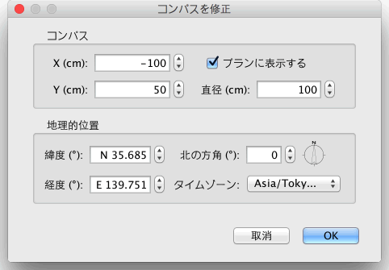

| コンパスと地理的位置の編集 | |||
間取り画面では、画面上部左にコンパスが表示されます。他のオブジェクト同様、このコンパスもドラッグアンドドロップ操作, および、選択時の矢印キーの操作が可能です。 コンパスのみが画面上で選択されている場合、コンパスのサイズ変更、または方角の変更が以下の図に示されている印を使用して可能になります。
|

|
マウスのポイントを印の上に動かすと、変更可能の状態になります。 又、コンパスをダブルクリックすると、コンパス、地理的位置の編集画面に移行できます。この他に、メニューからプラン > コンパスを修正...を選ぶ事もできます。  コンパスを修正の画面では 位置, コンパスの直径, 北の方角、コンパス表示／非表示の設定ができます。その他、緯度、軽度、タイムゾーンを設定する事が可能です。 |
|